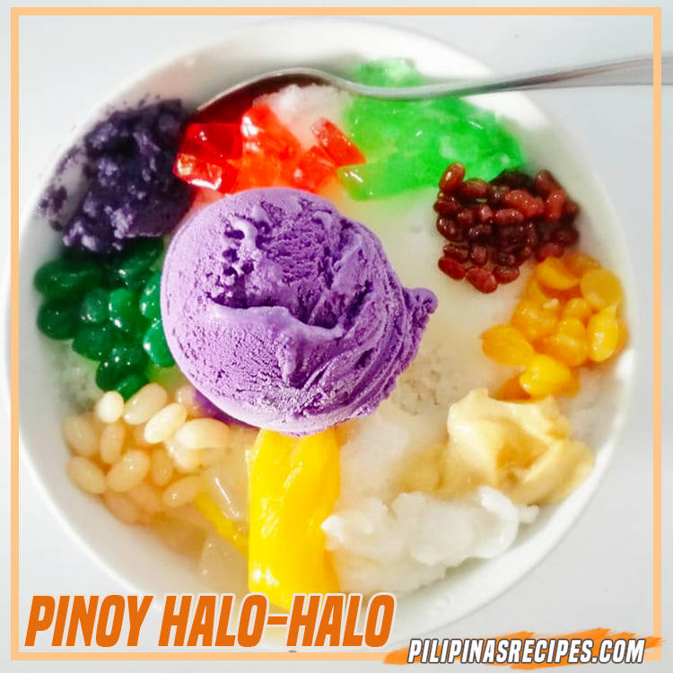

Halo-halo

Description
The Halo-Halo Recipe is truly a Pinoy dessert which contains shaved ice, evaporated milk, sugar or some syrup, sweet beans, sweet banana, nata de coco, garbanzos, jelly, macapuno, sago, gulaman, sweet jackfruit, ube halaya and leche flan although it doesn’t necessarily mean you need to have all ingredients to make it but the shaved ice, evaporated milk and sugar needs to be there all the time. This is the best way to do it if you want to know how to make Halo-Halo.
Halo-Halo is usually served in tall glasses or bowls because there are way too many ingredients for small servings, unlike Mais Con Yelo.
Ingredients
- 2 cups of shaved ice
- 1 ripe large banana
- 1 cup young shredded coconut, fresh or bottled
- 1/2 cup sweet corn or chickpeas (garbanzos)
- 2 cups evaporated milk
- 1 cup firm gelatin set into a gel and cut into 1/2 inch cubes
- 2 ripe mangoes
- 1 cup ripe jackfruit
- 1 cup cooked sweet yams or (ube halaya)
- 4 scoops of favorite ice cream
- 1/2 cup rice pop
How to make Halo-Halo
- Peel mangoes and slice into half-inch cubes.
- Divide each ingredient into 4 equal parts. Get 4 tall glasses, then place each ingredients layer by layer.
- Put the one-half cup of shaved ice to each glass.
- Pour a quarter of milk evap over shaved ice to each glass.
- Put a scoop of ice cream on top
- Drizzle some nuts or rice crispies on top of the ice cream.